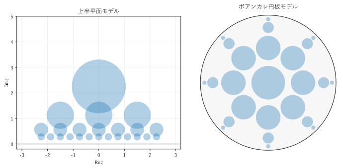
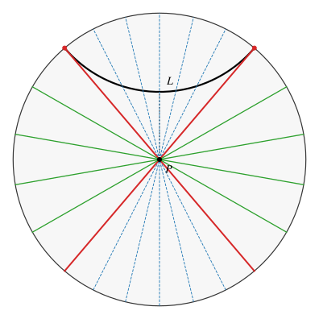

第 4 章 距離と測地線
この章では、第 3 章で導入した計量から、曲線の長さと 2 点の距離を求める。さらに、測地線の性質と、双曲幾何学を特徴づける平行線のふるまいを調べる。
曲線の長さ
計量 \(ds\) が与えられると、曲線の長さは \(ds\) を曲線に沿って積分して求まる。上半平面モデルでは、曲線を \(z(t) = x(t) + i y(t)\) （\(a \le t \le b\)）と表すと、その双曲的な長さは
である。
最も簡単な例として、虚軸上の点 \(ia\) から \(ib\) （\(0 < a < b\)）への線分を考える。\(z(t) = it\) （\(a \le t \le b\)）とすると \(|z'(t)| = 1\)、\(y(t) = t\) なので
となる。たとえば \(i\) から \(2i\) までの長さは \(\ln 2 \approx 0.693\) であり、\(2i\) から \(4i\) までの長さも同じ \(\ln 2\) である。ユークリッドの長さは 2 倍になっているが、双曲的な長さは等しい。上に行くほど、同じ双曲的な長さに対応するユークリッドの長さが長くなる。逆に実軸に向かって下りていくと、\(a \to 0\) で \(L \to \infty\) となり、実軸には有限の長さでは届かない。実軸が「無限遠」であるのはこの意味である。
この線分は、\(ia\) と \(ib\) を結ぶ最短の曲線である。\(ia\) から \(ib\) への任意の曲線について、\(|z'(t)| \ge |y'(t)|\) であるから
が成り立つ。等号は、曲線が虚軸に沿ってまっすぐ上るときに限られる。こうして、虚軸（一般に実軸に垂直な半直線）が測地線であることが確かめられる。
距離の公式
2 点 \(z\)、\(w\) を結ぶ曲線の長さの最小値を、2 点の双曲距離\(d(z, w)\) という。上半平面モデルでは、次の式で求まる。
この式は、次の 2 段階で確かめられる。
2 点が虚軸上にあるとき（\(z = ia\)、\(w = ib\)）、右辺は \(1 + (b - a)^2 / (2ab) = (a^2 + b^2) / (2ab)\) である。一方、\(\cosh (\ln (b/a)) = (b/a + a/b) / 2\) も同じ値なので、前節の結果と一致する。
双曲平面には、距離を変えずに点を動かす変換（等長変換、第 5 章）が豊富にあり、任意の 2 点を虚軸上の 2 点に移せる。右辺の式は、それらの変換で値が変わらないことが計算で確かめられる。
同じ距離を、\(\artanh\) を使って
と書くこともできる（付録 Aの公式で、式 (5) と同じ値になることが確かめられる）。
ほかのモデルの距離の公式もまとめておく。
モデル |
距離 \(d\) |
|---|---|
上半平面 |
\(\cosh d = 1 + \dfrac{|z - w|^2}{2 \Im z \, \Im w}\) |
円板 |
\(\cosh d = 1 + \dfrac{2 |z - w|^2}{(1 - |z|^2)(1 - |w|^2)}\)、または \(d = 2 \artanh \left| \dfrac{z - w}{1 - \bar{w} z} \right|\) |
双曲面 |
\(\cosh d = B(x, y) = x_0 y_0 - x_1 y_1 - x_2 y_2\) |
クライン |
\(\cosh d = \dfrac{1 - k \cdot m}{\sqrt{(1 - |k|^2)(1 - |m|^2)}}\) |
円板モデルで、中心 \(0\) から点 \(z\) までの距離は、\(w = 0\) とおいて
となる。逆に、中心から双曲距離 \(r\) の点は、ユークリッドの半径 \(\tanh (r/2)\) の円周上にある。\(r = 1, 2, 3, 5, 10\) に対して \(\tanh (r/2) \approx 0.462, 0.762, 0.905, 0.987, 0.99991\) であり、遠い点ほど境界に押し込められる。
数値で確かめる
計量 (4) の積分を数値計算し、距離の公式と比べる。上半平面の曲線を細かい折れ線で近似し、各区間のユークリッドの長さを、区間の中点の高さで割って足し合わせる。
14def curve_length(points: ArrayLike) -> float:
15 """上半平面の折れ線 points の双曲的な長さ. 各区間の |dz| / y を足し合わせる."""
16 path = np.asarray(points, dtype=np.complex128)
17 dz = np.abs(np.diff(path))
18 y_mid = (path[1:].imag + path[:-1].imag) / 2.0
19 return float(np.sum(dz / y_mid))
次の 3 本の曲線の長さを計算した。
\(i\) から \(2i\) への垂直な線分（測地線）
\(-1 + i\) から \(1 + i\) への水平な線分
同じ 2 点を結ぶ、中心 \(0\)、半径 \(\sqrt{2}\) の半円の弧（測地線）
i から 2i への垂直な線分
数値積分による長さ 0.693147181
ln 2 0.693147181
距離の公式 0.693147181
-1 + i から 1 + i への水平な線分
数値積分による長さ 2.000000000
-1 + i から 1 + i への半円の弧
数値積分による長さ 1.762747174
距離の公式 1.762747174
サンプルの全体：ch04_length.py
水平な線分は、上半平面の図の上では 2 点を結ぶ最短の線に見えるが、双曲的な長さは 2 であり、半円の弧の長さ \(\arcosh 3 \approx 1.763\) より長い。半円の弧は、いったん上（\(y\) が大きく、双曲的には「短く測れる」場所）へ回り込むことで、全体の長さを短くしている。
同じ大きさの図形の見え方
双曲距離が等しくても、モデルの上での見かけの大きさは場所によって違う。図 5は、双曲的な半径がどれも 0.5 の円を、2 つのモデルのいろいろな位置に描いたものである。


図 5 双曲的な半径 0.5 の円を、上半平面モデル（左）と円板モデル（右）に描いたもの
サンプルの全体：ch04_equal_circles.py
双曲平面の円は、どちらのモデルでもユークリッドの円として描かれる。ただし、ユークリッドの円の中心は双曲的な円の中心と一致しない。上半平面モデルでは、中心 \(x + iy\)、双曲的な半径 \(r\) の円は、中心 \(x + iy \cosh r\)、半径 \(y \sinh r\) のユークリッドの円になり、上方にずれる。
左の図で、各段の円は高さが 2 倍ずつ違い、横の間隔も高さに比例させてある。どの円も双曲平面では同じ大きさであり、第 5 章で示すように、\(z \mapsto 2z\) は距離を変えない変換である。右の図では、境界に近い円ほど小さく描かれている。円板モデルの住人から見れば、どの円も同じ大きさであり、境界に近づいても世界の「果て」は見えない。
測地線の性質
双曲平面の測地線は、ユークリッド平面の直線と多くの性質を共有する。
異なる 2 点を通る測地線は、ちょうど 1 本ある。
測地線は、両方向に限りなく延びる（長さが無限である）。
測地線は双曲平面を 2 つの部分に分ける。
モデルの上では、測地線の両端は 2 つの無限遠点にある。逆に、異なる 2 つの無限遠点を結ぶ測地線は、ちょうど 1 本ある。たとえば円板モデルでは、境界の 2 点で単位円に直交する円弧が 1 本だけ決まる。
平行線
いよいよ、平行線公準が成り立たないことを確かめる。測地線 \(L\) と、その上にない点 \(P\) を考える。\(P\) から \(L\) に下ろした垂線の長さを \(h\) とする。
円板モデルで、\(P\) を中心 \(0\) に置いた図が図 6である。\(P\) を通る測地線は円板の直径であり、\(L\) は \(P\) から距離 \(h = 1\) の位置にある円弧（黒の太線）である。


図 6 点 \(P\) を通る測地線と、測地線 \(L\) の関係（\(h = 1\)）
サンプルの全体：ch04_parallels.py
\(P\) を通る測地線は、\(L\) との関係によって 3 種類に分かれる。
青の破線：\(L\) と交わる測地線。
赤の太線：\(L\) の端の無限遠点（赤の点）を通る測地線。\(L\) とは交わらないが、無限遠点に向かって \(L\) との距離が限りなく 0 に近づく。これを \(L\) の極限平行線という。\(P\) を通る極限平行線は、\(L\) の両端に向かう 2 本がある。
緑の線：2 本の極限平行線の間にあり、\(L\) と交わらず、無限遠点も共有しない測地線。これを \(L\) の超平行線という。超平行線は無数にある。
ユークリッド平面では、極限平行線と超平行線の区別はなく、\(P\) を通る平行線は 1 本だけである。双曲平面では、\(L\) と交わらない測地線が無数にある。
垂線と極限平行線のなす角 \(\Pi(h)\) を平行角という。ロバチェフスキーが見いだしたように、平行角は距離 \(h\) だけで決まり、
が成り立つ。\(h \to 0\) で \(\Pi(h) \to \pi/2\) （ユークリッドの場合と同じく、平行線は垂線に直角）、\(h \to \infty\) で \(\Pi(h) \to 0\) となる。\(h = 1\) では \(\Pi(1) \approx 0.705\) （約 40.4 度）であり、図 6の赤の線と、上向きの垂線（点線）のなす角がこれにあたる。\(L\) から遠い点ほど、\(L\) と交わる測地線の範囲が狭くなる。
2 本の測地線の関係は、まとめると次の 3 通りである。
関係 |
性質 |
|---|---|
交わる |
1 点で交わる。交点から離れるほど、測地線の間の距離は増える。 |
極限平行 |
無限遠点を 1 つ共有する。その無限遠点に向かって距離が 0 に近づき、反対側では距離が限りなく増える。 |
超平行 |
共通の垂線をちょうど 1 本持ち、その垂線の位置で最も近い。そこから両側に離れるほど、距離が限りなく増える。 |
この章のまとめ
曲線の長さは計量の積分で求まる。上半平面モデルで垂直な線分の長さは \(\ln (b/a)\) である。
2 点の距離は、各モデルで簡単な式で求まる（表 7）。
双曲的に同じ大きさの図形でも、モデルの上では境界に近いほど小さく見える。
直線の外の 1 点を通り、その直線と交わらない測地線は無数にある。その境目が極限平行線であり、平行角は \(\tan (\Pi(h)/2) = e^{-h}\) で決まる。